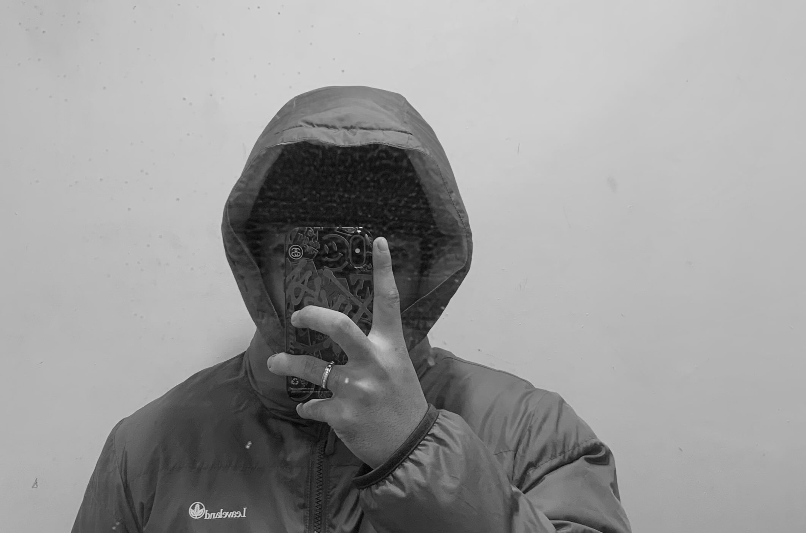
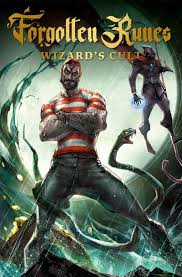
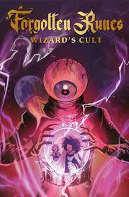
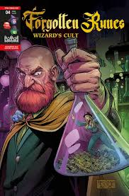

P L E A S U R E S
FRONT END DEVELOPER
ABOUT MYSELF
"Every pixel has a purpose. As a front-end developer, you're not just coding — you're crafting experiences that users will remember."

HELLO, I AM MICO GOLOSINO
"Coding is more than syntax and logic — it's the art of turning imagination into something real. Every bug I fix and every feature I build brings me one step closer to mastering creation through code."
- Name: MICO GOLOSINO
- Age: 21
- Address: DINGALAN, AURORA, PHILIPPINES
- Phone: 09752018086
- Email: golosinomico1@gmail.com
MY SKILLS
I AM A CREATIVE DEVELOPER AND MULTI-SKILLED IT PROFESSIONAL CURRENT BASED IN THE PHILIPPINES


WEBSITE
I’ve had the privilege of collaborating with some amazing companies, helping them achieve their goals through innovative web development, design, digital solutions, and even operations and project management. Take a look below to see who I’ve had the pleasure of working with.


